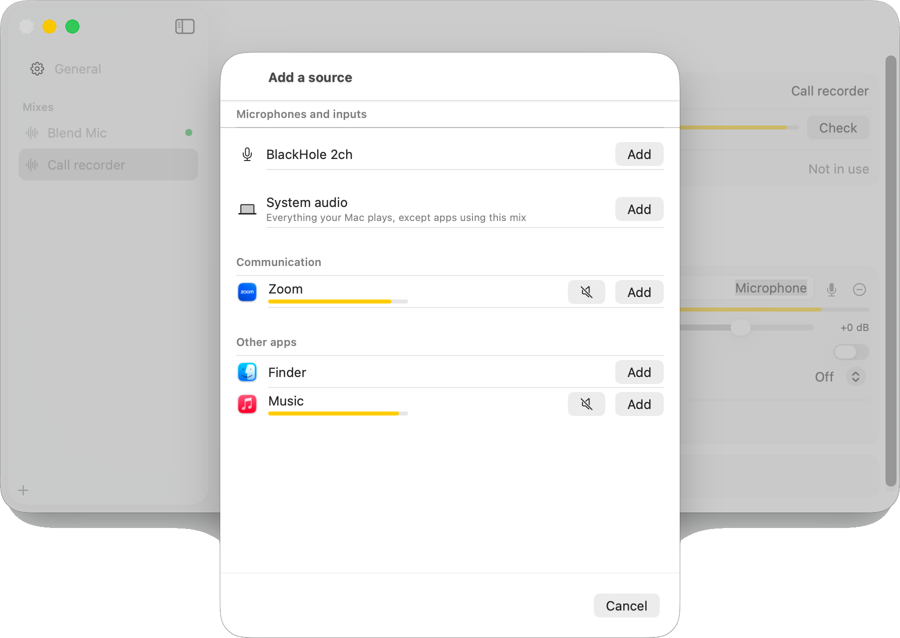
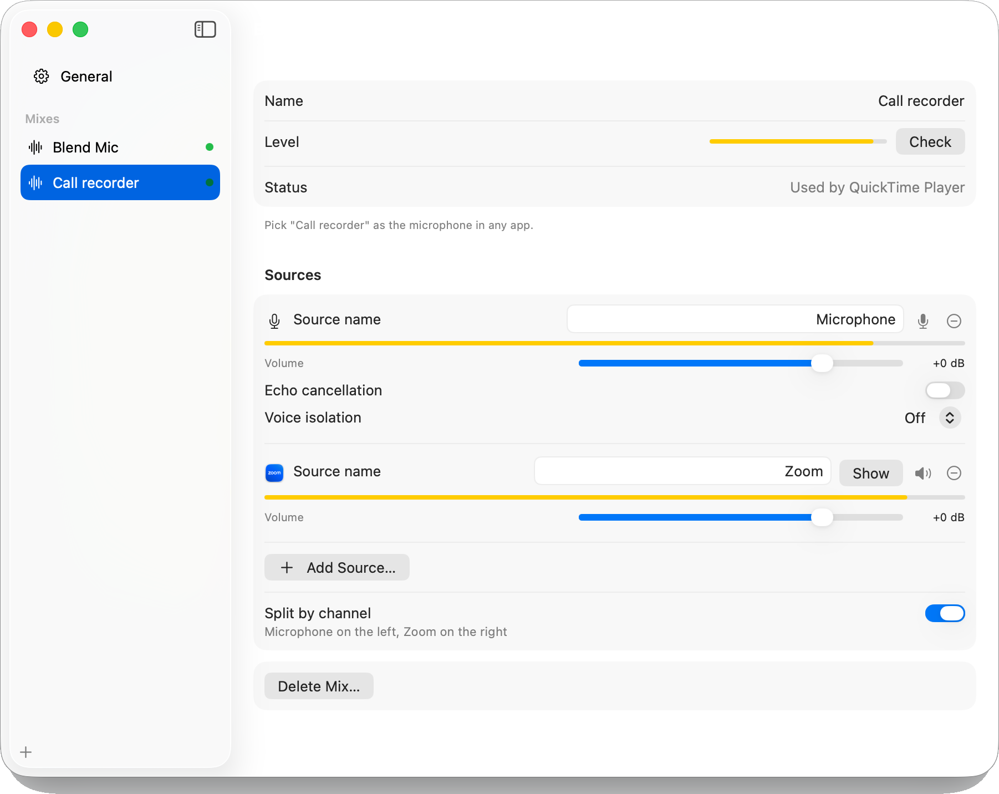
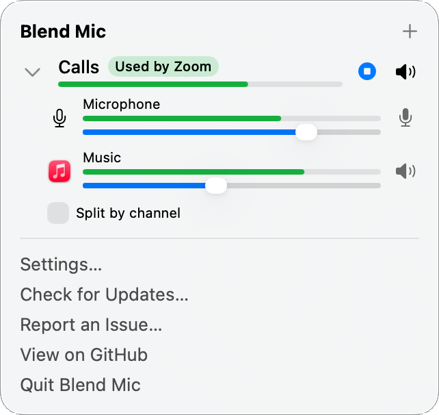

Build your own mic.
A local dictation app only hears your microphone, so with headphones on it never hears the call. Blend Mic mixes your voice and the call into one mic, so a dictation app like Handy or OpenSuperWhisper transcribes both sides on your Mac.
Blend Mic (Calls)
in useA new mic, made of:
Your dictation app (using Blend Mic)



I wanted my own transcription app to hear my online calls with my headphones on. BlackHole needed a lot of setup before anything worked, and Loopback costs $99, so I made one that sits in the menu bar. It takes an app's sound without rerouting it, so you keep hearing it, and it leaves the call out of system audio, so the call never hears itself.
A mic in every app
Each mix shows up as Blend Mic (its name) in Discord, Zoom or your dictation app.
Music ducks when you talk
Off by default. Turn it on for a mix, and the other sources drop while you speak.
The call never hears itself
System audio leaves out the app using the mix, so the other side hears no echo.
Up to 16 mixes
One for Discord, another for your dictation app, each with its own sources.
My other work
Questions
How do I record both sides of a call on a Mac with headphones on?
Make a mix in Blend Mic with your microphone and System audio, then pick that mix as the microphone in your dictation or recording app. Leave the call app on your usual microphone. Split mode puts you on the left channel and the call on the right.
Is Blend Mic free?
Yes. It is free and open source under the MIT license, with no accounts.
How is Blend Mic different from BlackHole or Loopback?
BlackHole is a free virtual audio device with no mixer, so you route sound through it in Audio MIDI Setup. Loopback mixes sources but costs $99. Blend Mic is a free menu bar app where each mix is a microphone with a slider per source, and it captures an app without rerouting it, so you keep hearing it.
Can't macOS make a virtual mic on its own?
No. Audio MIDI Setup can make an aggregate device, but it puts devices side by side instead of mixing them, so a call app hears only the first channels, usually just your mic. It can't capture one app's sound either. For that you need a driver like BlackHole plus a Multi-Output Device, which takes everything your Mac plays, with no volume per app, and a call would hear itself. Blend Mic mixes your sources into one mic, with a slider for each.
Which apps can use a Blend Mic mix?
Any app that lets you pick a microphone, such as Handy, OpenSuperWhisper, Discord, Zoom, Google Meet and QuickTime Player. Each mix shows up as Blend Mic followed by its name.
How much delay does Blend Mic add?
About 30 ms through a mix, and about 75 ms with echo cancellation on, measured on Apple silicon.
Does Blend Mic install a kernel extension?
No. It installs a Core Audio plug-in that runs in user space. It asks for an administrator password once, and Uninstall in its settings removes it.
What does Blend Mic need?
A Mac with Apple silicon and macOS 15 or later.
Your audio never leaves your Mac, and there are no accounts. Blend Mic checks for updates once a day, and the update server counts those checks by app, version and country and never stores your IP address. This page counts visits with Cloudflare Web Analytics, which sets no cookies and doesn't track you across sites.
Or with Homebrew:
brew tap spashii/blend https://github.com/spashii/blend brew trust spashii/blend brew install --cask blend